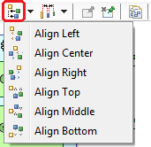
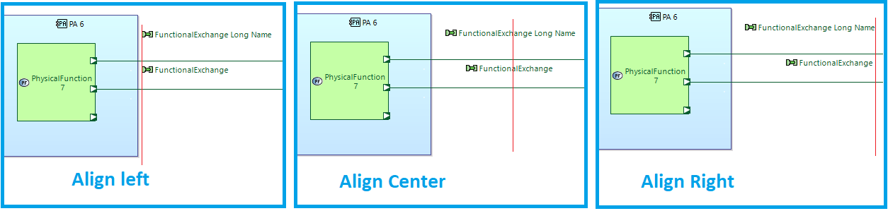
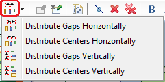
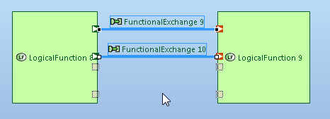

{kind=link}
{kind=link}

Graphical elements have to be unpinned before running this action. To unpin an element, choose "Unpin selected elements on the diagram menu"
In order to facilitate the layout set up of elements on diagrams, some Diagram facilities exist:
If you select at least two elements, you can align them on the right, middle, left, top...

This can also be achieved on edge labels, however for it to work, you need to select the labels (and not the edges)

If you select at least 3 elements, you can distribute them vertically, horizontally (i.e ensure that there is a gap of the same size between each element in the chosen direction).
This can also be achieved on edge labels, however for it to work, you need to select the labels (and not the edges)

The goal of this feature is to assist user to set edge selection vertical or horizontal in order to help exchange layout. If the edge is connected to "ports", the "port" is moved too.'' To do this, it is recommended to arrange all connected ports first, then use the right-to-left multiple selection.
In addition to the standard automatic layout, this specific action allows to arrange automatically the edges/ports so that they are as short as possible by preserving routing style. This action moves the ports of a node / container when necessary. It is useful when the positions of the nodes and containers have already been defined and edges still need a better layout.
|
|
Graphical elements have to be unpinned before running this action. To unpin an element, choose "Unpin selected elements on the diagram menu" |
This feature aims to move the group {edge, labels, ports} in a single operation when using the F3 shortcut and drag/move the edge.
Moreover, by selecting multiple edges with ports and pressing F3 key, you can move them simultaneously:

Although there is already a button to snap back a label to it original position on label selection, a new button " Snap Back Label(s)" on edge selection allows to snap back all labels (source, middle, target) of this edge at the same time:
It is a new preference added in Sirius > Sirius Diagram > Connections:

When you select an edge or a label, graphical link appears between them:
To quickly copy paste Notes on a diagram, click on CTRL and move the Notes: new Notes are created.

On a sequence diagram, instead of moving vertically each graphical element in order to have more space, it is possible to do it more easily by using the combination:
{kind=link}
{kind=link}
{kind=link}